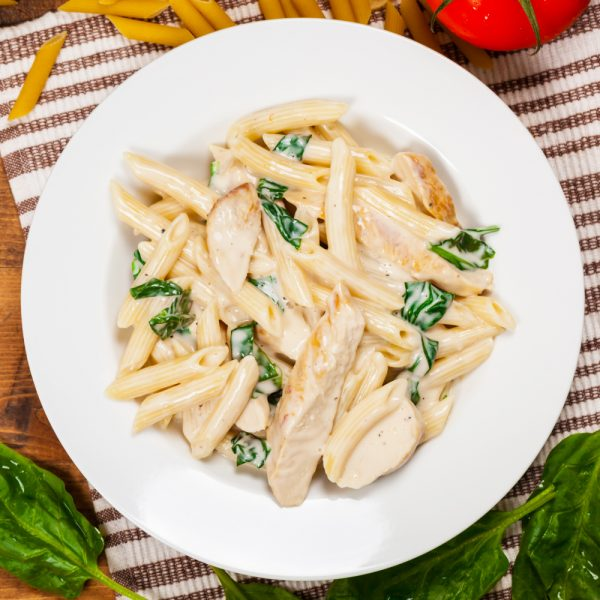

Penne Alfredo

The Alfredo Pasta is an Italian pasta dish made using fresh pasta, vegetables, chicken pieces combined with butter, cream and cheese. As the cheese melts, it results in a creamy, rich cheese sauce that coats the pasta. It is without a doubt one of the most delicious and simple dishes to prepare at home.
Ingredients
For Cooking the Alfredo Sauce
- 2 tbsp butter
- 3 tbsp flour
- 3 cloves garlic minced
- 2 cups of milk
- tsp ½dried basil
- ½ tsp Dried Oregano
- ½ cup Parmesan Cheese shredded
- 1 tsp Salt and pepper
For Cooking the Chicken
- 650 gms Chicken Mini Bites
- 2 tbsp butter
- ½ tsp oregano dried
- ½ tsp Basil dried
- 1 tsp Salt and pepper
- 400 gm Penne Pasta cooked
- ¼ cup Parsley fresh or dried
- ¼ cup Parmesan Cheese shredded
Steps
- Heat a pan on medium flame and melt some butter in it. Add the chicken pieces and sauté them. Then add oregano, basil, salt and pepper. Stir the pieces and sauté for 8-10 minutes. Once the chicken is tender and cooked, transfer it to a plate and set it aside.
- In the same pan, add butter again. Once it melts, add the chopped garlic and sauté it. Once it is soft, add half the flour and mix it. Then add the rest of the flour and mix it again. Add the milk little at a time and keep stirring to avoid lumps. As the sauce begins to thicken, add oregano, basil, salt and pepper. Stir well. Then add Parmesan cheese and mix until it melts.
- Take a bowl and add the cooked penne pasta to it. Then pour the sauce over the pasta. Then add the chicken pieces and give a good mix. Add extra Parmesan cheese and sprinkle fresh parsley. Mix well and serve.